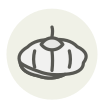

Pattypan squash
Pâtisson
| Latin name | Cucurbita pepo var. clypeata |
|---|---|
| Family | Vegetables |
| Origin | Central America |
| Season | July – October |
| Flavour | Mild · Delicate · Sweet · Fresh |
| Typical price | 3–6 €/kg |
What it is
Its scalloped edge gave it the French name — a pâtisson is a small fluted pie — and English speakers saw a pattypan tin. Picked at the size of a plum it is tender enough to eat whole; left to grow it turns to a hollow, woody shell.
In the kitchen
Buy them small — no wider than your palm. Anything larger has already turned fibrous.
Goes with
Thyme Olive oil Garlic Basil Butter Lemon Black pepper Parsley
Same species
Butternut squash Courgette flower Kabocha Muscade de Provence squash Red kuri squash Pumpkin
In season alongside
Spaghetti squash Japanese tilefish (amadai) Bettarazuke Brousse du Rove Cévennes sweet onion Chayote
Something wrong here, or missing? Tell us